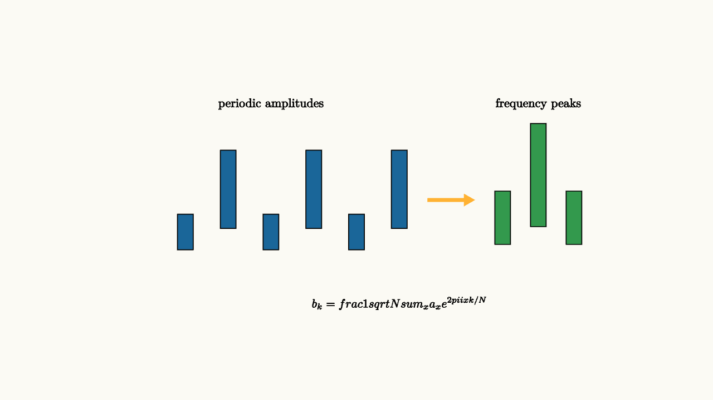

Fourier analysis turns patterns in time or space into patterns in frequency. The quantum Fourier transform does the analogous job for amplitudes over a finite set of basis states. It takes a state
and maps it to
where each output amplitude combines all input amplitudes with rotating complex phases:
The formula looks dense, but the purpose is familiar. Periodic structure in one view becomes concentrated structure in the Fourier view.
The phase factor is a root of unity. As $x$ changes, $e^{2\pi i xk/N}$ walks around the complex circle. For some values of $k$, the walk lines up with a repeated pattern in the input. The contributions then point mostly in the same direction. For other values of $k$, the contributions spread around the circle and cancel.

source
background = [0.985, 0.98, 0.955, 1]
camera = Camera(5.0b)
mesh bars = block {
. fill{BLUE} center{[-2.4, -0.45, 0]} Rect([0.22, 0.5])
. fill{BLUE} center{[-1.8, 0.15, 0]} Rect([0.22, 1.1])
. fill{BLUE} center{[-1.2, -0.45, 0]} Rect([0.22, 0.5])
. fill{BLUE} center{[-0.6, 0.15, 0]} Rect([0.22, 1.1])
. fill{BLUE} center{[0.0, -0.45, 0]} Rect([0.22, 0.5])
. fill{BLUE} center{[0.6, 0.15, 0]} Rect([0.22, 1.1])
. color{ORANGE} Arrow(start: [1.0, 0, 0], end: [1.65, 0, 0])
. fill{GREEN} center{[2.05, -0.25, 0]} Rect([0.22, 0.75])
. fill{GREEN} center{[2.55, 0.35, 0]} Rect([0.22, 1.45])
. fill{GREEN} center{[3.05, -0.25, 0]} Rect([0.22, 0.75])
. center{[-1.2, 1.35, 0]} Text("periodic amplitudes", 0.62)
. center{[2.55, 1.35, 0]} Text("frequency peaks", 0.62)
. center{[0.6, -1.45, 0]} Tex("b_k=\\frac1{\\sqrt N}\\sum_x a_x e^{2\\pi i xk/N}", 0.60)
}
"period to frequency"
play Fade(0.7)The QFT matters because several quantum algorithms reduce a problem to finding a hidden period. Shor's factoring algorithm is the famous example. It turns factoring into period finding for modular exponentiation, then uses the QFT to make that period visible with high probability.
Why phase is the measuring tape
The Fourier transform tests many candidate frequencies. For the right frequency, the rotating phase factors line up across repeated structure, so amplitudes reinforce. For the wrong frequency, phases sweep around the complex circle and cancel.
This is the same interference principle from earlier lessons, now organized across many basis states.
Imagine a function whose values repeat every $r$ steps. If the quantum state has amplitude on inputs consistent with one repeated value, those inputs are spaced by $r$. The QFT converts spacing into frequency. Measurement after the QFT tends to produce numbers close to multiples of $N/r$. From several such samples, classical arithmetic can recover $r$.
This is a pattern worth remembering: the quantum part creates samples whose distribution is shaped by interference, and the classical part interprets those samples. Shor's algorithm still uses ordinary number theory after measurement, including continued fractions, to turn a near-frequency into an exact period.
source
param match = 0.0
background = [0.985, 0.98, 0.955, 1]
camera = Camera(4.8b)
let PhaseTest = |match| block {
. color{BLUE} Arrow(start: [-1.9, 0.6, 0], end: [-1.25, 0.6, 0])
. color{BLUE} Arrow(start: [-1.25, 0.6, 0], end: [-0.6, 0.6 + 0.4 * (1 - match), 0])
. color{BLUE} Arrow(start: [-0.6, 0.6 + 0.4 * (1 - match), 0], end: [0.05, 0.6, 0])
. center{[-0.9, 1.22, 0]} Text("wrong frequency cancels", 0.62)
. color{GREEN} Arrow(start: [-1.9, -0.55, 0], end: [-1.25, -0.55, 0])
. color{GREEN} Arrow(start: [-1.25, -0.55, 0], end: [-0.6, -0.55 + 0.3 * match, 0])
. color{GREEN} Arrow(start: [-0.6, -0.55 + 0.3 * match, 0], end: [0.05, -0.55 + 0.6 * match, 0])
. center{[-0.85, -1.2, 0]} Text("right frequency reinforces", 0.62)
. center{[1.35, 0, 0]} Tex("e^{2\\pi i xk/N}", 0.66)
}
"unmatched phases"
mesh scene = PhaseTest(match: $match)
play Fade(0.6)
"matched phases"
match = 1.0
scene = PhaseTest(match: $match)
play Lerp(1.2)
"sample peak"
scene = block {
. center{[0, 1.45, 0]} Text("measurement samples the peaks", 0.62)
. fill{alpha{0.2} GREEN} stroke{GREEN, 3} center{[-1.2, -0.55, 0]} Rect([0.32, 0.62])
. fill{alpha{0.2} GREEN} stroke{GREEN, 3} center{[-0.45, 0.05, 0]} Rect([0.32, 1.22])
. fill{alpha{0.2} GREEN} stroke{GREEN, 3} center{[0.3, -0.55, 0]} Rect([0.32, 0.62])
. fill{alpha{0.2} ORANGE} stroke{ORANGE, 3} center{[1.15, 0.28, 0]} Rect([0.42, 1.45])
. center{[0, -1.35, 0]} Text("classical post-processing turns peaks into a period", 0.62)
}
play Trans(1.0)The output of the QFT is still a quantum state. Measurement samples it. The algorithm is designed so samples cluster near values that reveal the period. Classical post-processing then turns those samples into the exact period, often using continued fractions.
The QFT is also the engine inside phase estimation. If an operation has an eigenvalue $e^{2\pi i\theta}$, phase estimation uses controlled powers of that operation to write multiples of $\theta$ into phase. The inverse QFT then turns those phases into a binary estimate of $\theta$. Many famous quantum algorithms are variations on this theme: encode a hidden quantity as phase, use Fourier structure to concentrate it, then measure.
The transform itself can be built from ordinary gates. On $n$ qubits, the exact QFT uses Hadamards and controlled phase rotations. The rotations get smaller for less significant qubits. In many algorithms, tiny rotations can be approximated or omitted because the final measurement tolerates a little blur. This is another recurring engineering theme: the mathematics gives an exact change of basis, while implementation asks how accurately the basis change must be performed.
The lesson to keep
The QFT is a change of basis from positions to frequencies in amplitude space. It is useful because periodic structure causes constructive interference at related frequencies. Quantum algorithms exploit that concentration, then measurement extracts a classical clue.